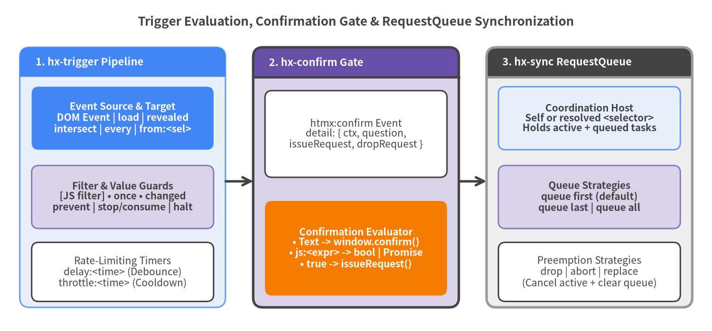

Trigger & Synchronization Attributes
Trigger and synchronization attributes control when an element initiates an HTTP request, whether it requires explicit user or programmatic confirmation, and how concurrent requests compete or queue on shared coordination scopes.
| Symbol | Category | Default Behavior | Inheritance | Key Capabilities |
|---|---|---|---|---|
hx-trigger |
Event & Timing Spec | submit (form), change (input/select/textarea), click (others) |
Non-inherited | Event filters [expr], once, changed, delay:, throttle:, from:, target:, prevent, stop/consume, halt, capture, passive, load, revealed, intersect, every <time> |
hx-sync |
Concurrency Queue | Per-element RequestQueue (queue last on self if unsynced) |
Inherited by default | [<selector>:]<strategy> (queue first, queue last, queue all, drop, abort, replace) |
hx-confirm |
Confirmation Gate | None (fires htmx:confirm on every request) |
Inherited by default | Native window.confirm(), js: sync/async Promise<boolean>, custom modal integration via issueRequest() / dropRequest() |

Source Code
from drawlib.canvas import save, setup
from drawlib.lines import line
from drawlib.shapes import rectangle
from drawlib.smartarts import Panel
from drawlib.styles import Styles
from drawlib.text import text
setup(width=180, height=84, dpi=150)
text((90, 78.5), "Trigger Evaluation, Confirmation Gate & RequestQueue Synchronization", style=Styles.DarkBold.patch(text_size=12.5))
# Stage 1: Trigger Spec
p1 = Panel(
"1. hx-trigger Pipeline",
style=Styles.PrimaryNeutral,
header_style=Styles.PrimaryFlat,
text_style=Styles.WhiteBold.patch(text_size=10.5),
header_height=7.5,
)
p1.draw((5, 6), width=52, height=66, align="bottom_left")
rectangle((31, 54), width=46, height=16, style=Styles.PrimaryFlat.patch(shape_r=1.8), text="Event Source & Target\nDOM Event | load | revealed\nintersect | every | from:<sel>", text_style=Styles.WhiteBold.patch(text_size=10.0))
rectangle((31, 34), width=46, height=16, style=Styles.SecondaryNeutral.patch(shape_r=1.8), text="Filter & Value Guards\n[JS filter] • once • changed\nprevent | stop/consume | halt", text_style=Styles.DarkBold.patch(text_size=10.0))
rectangle((31, 15), width=46, height=15, style=Styles.White.patch(shape_r=1.8), text="Rate-Limiting Timers\ndelay:<time> (Debounce)\nthrottle:<time> (Cooldown)", text_style=Styles.Dark.patch(text_size=10.0))
# Stage 2: Confirmation Gate
p2 = Panel(
"2. hx-confirm Gate",
style=Styles.SecondaryNeutral,
header_style=Styles.SecondaryBold,
text_style=Styles.WhiteBold.patch(text_size=10.5),
header_height=7.5,
)
p2.draw((64, 6), width=52, height=66, align="bottom_left")
rectangle((90, 50), width=46, height=22, style=Styles.White.patch(shape_r=1.8), text="htmx:confirm Event\ndetail: { ctx, question,\nissueRequest, dropRequest }", text_style=Styles.Dark.patch(text_size=10.0))
rectangle((90, 21), width=46, height=24, style=Styles.AccentFlat.patch(shape_r=1.8), text="Confirmation Evaluator\n• Text -> window.confirm()\n• js:<expr> -> bool | Promise\n• true -> issueRequest()", text_style=Styles.WhiteBold.patch(text_size=10.0))
# Stage 3: RequestQueue Sync
p3 = Panel(
"3. hx-sync RequestQueue",
style=Styles.Neutral,
header_style=Styles.DarkBold,
text_style=Styles.WhiteBold.patch(text_size=10.5),
header_height=7.5,
)
p3.draw((123, 6), width=52, height=66, align="bottom_left")
rectangle((149, 54), width=46, height=16, style=Styles.PrimaryNeutral.patch(shape_r=1.8), text="Coordination Host\nSelf or resolved <selector>\nHolds active + queued tasks", text_style=Styles.DarkBold.patch(text_size=10.0))
rectangle((149, 34), width=46, height=16, style=Styles.SecondaryNeutral.patch(shape_r=1.8), text="Queue Strategies\nqueue first (default)\nqueue last | queue all", text_style=Styles.DarkBold.patch(text_size=10.0))
rectangle((149, 15), width=46, height=15, style=Styles.White.patch(shape_r=1.8), text="Preemption Strategies\ndrop | abort | replace\n(Cancel active + clear queue)", text_style=Styles.Dark.patch(text_size=10.0))
# Flow arrows
line((57, 38), (64, 38), arrow_head="->", style=Styles.DarkBold)
line((116, 38), (123, 38), arrow_head="->", style=Styles.DarkBold)
save()
Event Trigger Specification#
hx-trigger#
Specifies one or more DOM events, synthetic lifecycle triggers, or polling intervals that cause the element to issue its configured htmx request. Multiple trigger specifications can be separated by commas.
Syntax
<element hx-trigger="<event>[<filter>] [modifiers...], ..."></element>
Natural Default Triggers
When hx-trigger is omitted, htmx v4.0.1 selects a natural default event based on the element's tag and type:
| Element Selector | Default Trigger Event |
|---|---|
form |
submit |
input:not([type=button]):not([type=submit]), select, textarea |
change |
All other elements (button, a, div, input[type=button], etc.) |
click |
Trigger Modifiers & Filters Reference
| Modifier / Syntax | Category | Description & Behavior in htmx v4.0.1 |
|---|---|---|
[<expr>] |
Filter | Boolean JavaScript expression evaluated in the scope of the triggering Event and Element (e.g., keyup[key=='Enter' && ctrlKey]). Request only proceeds when truthy. |
once |
Lifecycle | Ensures the trigger fires at most once. For standard DOM events, passes { once: true } to addEventListener. |
changed |
Value Guard | Fires only if the element's value has changed since the last triggered request. For checkboxes/radios, compares .checked; for other inputs, stores previous .value in elt._htmx_state.changedValues. |
delay:<time> |
Rate Limit | Debounces the trigger by <time> (ms, s, or m). Resets the timer if another matching event arrives before <time> elapses. |
throttle:<time> |
Rate Limit | Throttles the trigger by <time> (ms, s, or m). Fires immediately on the leading edge, then queues the latest arriving event during the cooldown window to fire when the window expires. |
from:<selector> |
Delegation | Listens for the event on external node(s) resolved by <selector> (document, window, body, host, this, self, outside, closest <sel>, find <sel>, findAll <sel>, next [sel], previous [sel], global <sel>). Using from:outside triggers when the event target is outside the element. |
target:<selector> |
Filter | Restricts triggering so the event.target must match the CSS <selector>. |
prevent |
Event Control | Calls evt.preventDefault() when the trigger matches. |
stop / consume |
Event Control | Calls evt.stopPropagation() when the trigger matches (consume is an alias for stop). |
halt |
Event Control | Shorthand for prevent stop (calls both evt.preventDefault() and evt.stopPropagation()). |
capture |
Listener Option | Registers the underlying addEventListener with { capture: true }. |
passive |
Listener Option | Registers the underlying addEventListener with { passive: true }. |
Special Synthetic & Observer Triggers
| Trigger Name | Options / Modifiers | Description & Behavior in htmx v4.0.1 |
|---|---|---|
load |
delay:<time> |
Fires immediately when the element is initialized by htmx in the DOM (optionally delayed by delay:<time>). |
revealed |
Standard modifiers | Uses an IntersectionObserver (threshold: 0) that triggers once as soon as the element enters the viewport and then disconnects. |
intersect |
once, root:<sel>, rootMargin:<margin>, threshold:<0.0-1.0> |
Uses an IntersectionObserver that triggers whenever the element intersects root with the configured rootMargin and threshold. |
every <time> |
[<filter>] |
Polls the endpoint repeatedly every <time> (500ms, 2s, 1m) using setInterval as long as elt.isConnected is true. Supports conditional polling filters such as every 2s [document.hasFocus()]. |
Usage Examples
<!-- 1. Debounced live search with value-change guard and keyboard shortcut -->
<input type="search"
name="q"
hx-get="/api/search"
hx-trigger="input changed delay:250ms, search, keyup[key=='/' && ctrlKey] from:document"
hx-target="#results">
<!-- 2. Infinite scroll sentinel using revealed -->
<div hx-get="/api/feed?page=2"
hx-trigger="revealed"
hx-swap="outerHTML">
Loading more items...
</div>
<!-- 3. Custom IntersectionObserver with threshold and rootMargin -->
<section hx-post="/api/analytics/impression"
hx-trigger="intersect once threshold:0.5"
hx-swap="none">
Promoted Content Block
</section>
<!-- 4. Conditional polling every 5 seconds while tab is visible -->
<div hx-get="/api/jobs/status"
hx-trigger="every 5s [document.visibilityState === 'visible']"
hx-swap="innerMorph">
Checking job progress...
</div>
Request Queue & Concurrency Synchronization#
hx-sync#
Coordinates concurrent requests across a single element or a shared ancestor/group of elements (such as a <form> and its child inputs). Under the hood, htmx v4.0.1 attaches a RequestQueue instance to the resolved sync target element (elt._htmx_state.queue).
Syntax
<element hx-sync="[<selector>:]<strategy>"></element>
- If
<selector>:is omitted, the synchronization scope is the element itself (this). - If only
<selector>is provided without a colon or strategy (e.g.,hx-sync="closest form"), the strategy defaults toqueue first. hx-syncis inherited by default.
Synchronization Strategies
| Strategy | Behavior When a Request Is Already In-Flight on the Sync Target |
|---|---|
drop |
Silently drops the newly triggered request if an existing request is currently active. |
abort |
Allows the request to start, but registers an internal callback that aborts this request if another request is triggered on the same sync target while it is in flight. |
replace |
Immediately aborts the currently active request (active.abort()), clears any pending queued requests, and starts the new request immediately. |
queue / queue first |
(Default) Queues only the first arriving request while one is in flight; subsequent arrivals while the queue is non-empty are ignored. |
queue last |
Queues only the most recent arriving request (queue = [newTask]), overwriting any previously queued task so it runs after the active request finishes. |
queue all |
Appends every arriving request to a FIFO queue (queue.push(newTask)) and executes them sequentially one after another. |
Usage Examples
<!-- Prevent double-submission on a payment button by dropping concurrent clicks -->
<button hx-post="/api/checkout/pay" hx-sync="this:drop">
Submit Payment
</button>
<!-- Typeahead search: abort in-flight request and replace with latest keystroke -->
<input type="search"
name="q"
hx-get="/api/autocomplete"
hx-trigger="input changed delay:150ms"
hx-sync="this:replace"
hx-target="#suggestions">
<!-- Coordinate field validation and form submission: form submit replaces pending validation -->
<form hx-post="/api/register" hx-sync="this:replace">
<input type="email"
name="email"
hx-post="/api/validate-email"
hx-trigger="change"
hx-sync="closest form:abort"
hx-target="next .error-msg">
<span class="error-msg"></span>
<button type="submit">Create Account</button>
</form>
User & Programmatic Confirmation#
hx-confirm#
Requires confirmation before issuing a request. In htmx v4.0.1, hx-confirm supports both static confirmation prompts (displayed via window.confirm()) and dynamic JavaScript expressions (js: or javascript:) that can return either a synchronous boolean or an asynchronous Promise<boolean>.
Syntax
<element hx-confirm="<message> | js:<boolean-or-promise-expression>"></element>
| Mode / Event Property | Specification in htmx v4.0.1 |
|---|---|
| Plain Text Prompt | Calls native window.confirm(question). Proceeds via issueRequest() if true, or cancels via dropRequest() if false. |
js: / javascript: Prefix |
Evaluates the JavaScript expression in the element's scope (event is available). If the result is a Promise, htmx awaits Promise.resolve(result) and calls issueRequest() on truthy resolution or dropRequest() on falsy resolution. |
htmx:confirm Event |
Fired before every request (even when hx-confirm is not present, in which case detail.question is undefined). Calling event.preventDefault() pauses the request until event.detail.issueRequest() or event.detail.dropRequest() is invoked. |
| Inheritance | Inherited by default. |
Usage Examples
<!-- 1. Standard browser confirmation dialog -->
<button hx-delete="/api/account"
hx-confirm="Are you sure you want to permanently close your account?">
Close Account
</button>
<!-- 2. Async Promise confirmation using js: prefix (e.g. custom modal library) -->
<button hx-post="/api/deployments/production"
hx-confirm="js:MyModal.confirm({ title: 'Deploy to Production?', danger: true })">
Deploy Now
</button>
<!-- 3. Intercepting htmx:confirm globally for a custom <dialog> component -->
<script>
document.addEventListener("htmx:confirm", (evt) => {
const { question, issueRequest, dropRequest } = evt.detail;
if (!question) return; // No hx-confirm attribute set; allow default execution
evt.preventDefault(); // Pause request execution
showCustomConfirmDialog(question).then((confirmed) => {
if (confirmed) issueRequest();
else dropRequest();
});
});
</script>